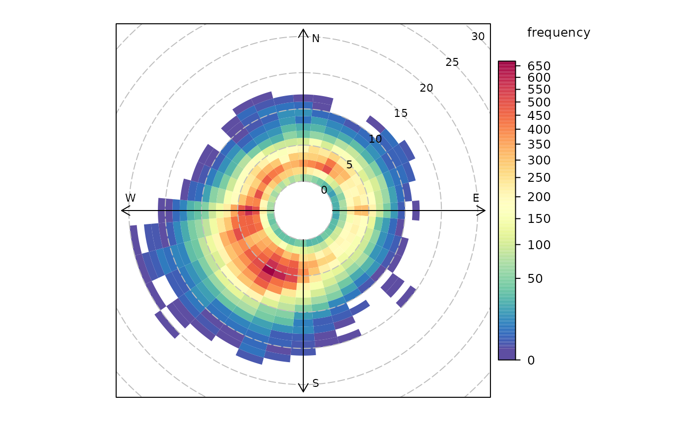

Function to plot wind speed/direction frequencies and other statistics
Source:R/polarFreq.R
polarFreq.RdpolarFreq primarily plots wind speed-direction frequencies in
‘bins’. Each bin is colour-coded depending on the frequency of
measurements. Bins can also be used to show the concentration of pollutants
using a range of commonly used statistics.
Usage
polarFreq(
mydata,
pollutant = NULL,
statistic = "frequency",
ws.int = 1,
wd.nint = 36,
grid.line = 5,
breaks = NULL,
cols = "default",
trans = TRUE,
type = "default",
min.bin = 1,
ws.upper = NA,
offset = 10,
border.col = "transparent",
key.header = statistic,
key.footer = pollutant,
key.position = "right",
key = TRUE,
auto.text = TRUE,
alpha = 1,
plot = TRUE,
...
)Arguments
- mydata
A data frame minimally containing
ws,wdanddate.- pollutant
Mandatory. A pollutant name corresponding to a variable in a data frame should be supplied e.g.
pollutant = "nox"- statistic
The statistic that should be applied to each wind speed/direction bin. Can be “frequency”, “mean”, “median”, “max” (maximum), “stdev” (standard deviation) or “weighted.mean”. The option “frequency” (the default) is the simplest and plots the frequency of wind speed/direction in different bins. The scale therefore shows the counts in each bin. The option “mean” will plot the mean concentration of a pollutant (see next point) in wind speed/direction bins, and so on. Finally, “weighted.mean” will plot the concentration of a pollutant weighted by wind speed/direction. Each segment therefore provides the percentage overall contribution to the total concentration. More information is given in the examples. Note that for options other than “frequency”, it is necessary to also provide the name of a pollutant. See function
cutDatafor further details.- ws.int
Wind speed interval assumed. In some cases e.g. a low met mast, an interval of 0.5 may be more appropriate.
- wd.nint
Number of intervals of wind direction.
- grid.line
Radial spacing of grid lines.
- breaks
The user can provide their own scale.
breaksexpects a sequence of numbers that define the range of the scale. The sequence could represent one with equal spacing e.g.breaks = seq(0, 100, 10)- a scale from 0-10 in intervals of 10, or a more flexible sequence e.g.breaks = c(0, 1, 5, 7, 10), which may be useful for some situations.- cols
Colours to be used for plotting. Options include “default”, “increment”, “heat”, “jet” and
RColorBrewercolours — see theopenairopenColoursfunction for more details. For user defined the user can supply a list of colour names recognised by R (typecolours()to see the full list). An example would becols = c("yellow", "green", "blue").colscan also take the values"viridis","magma","inferno", or"plasma"which are the viridis colour maps ported from Python's Matplotlib library.- trans
Should a transformation be applied? Sometimes when producing plots of this kind they can be dominated by a few high points. The default therefore is
TRUEand a square-root transform is applied. This results in a non-linear scale and (usually) a better representation of the distribution. If set toFALSEa linear scale is used.- type
typedetermines how the data are split i.e. conditioned, and then plotted. The default is will produce a single plot using the entire data. Type can be one of the built-in types as detailed incutDatae.g. “season”, “year”, “weekday” and so on. For example,type = "season"will produce four plots — one for each season.It is also possible to choose
typeas another variable in the data frame. If that variable is numeric, then the data will be split into four quantiles (if possible) and labelled accordingly. If type is an existing character or factor variable, then those categories/levels will be used directly. This offers great flexibility for understanding the variation of different variables and how they depend on one another.Type can be up length two e.g.
type = c("season", "weekday")will produce a 2x2 plot split by season and day of the week. Note, when two types are provided the first forms the columns and the second the rows.- min.bin
The minimum number of points allowed in a wind speed/wind direction bin. The default is 1. A value of two requires at least 2 valid records in each bin an so on; bins with less than 2 valid records are set to NA. Care should be taken when using a value > 1 because of the risk of removing real data points. It is recommended to consider your data with care. Also, the
polarFreqfunction can be of use in such circumstances.- ws.upper
A user-defined upper wind speed to use. This is useful for ensuring a consistent scale between different plots. For example, to always ensure that wind speeds are displayed between 1-10, set
ws.int = 10.- offset
offsetcontrols the size of the ‘hole’ in the middle and is expressed as a percentage of the maximum wind speed. Setting a higheroffsete.g. 50 is useful forstatistic = "weighted.mean"whenws.intis greater than the maximum wind speed. See example below.- border.col
The colour of the boundary of each wind speed/direction bin. The default is transparent. Another useful choice sometimes is "white".
- key.header
Adds additional text/labels to the scale key. For example, passing the options
key.header = "header", key.footer = "footer1"adds addition text above and below the scale key. These arguments are passed todrawOpenKeyviaquickText, applying theauto.textargument, to handle formatting.see
key.footer.- key.position
Location where the scale key is to plotted. Allowed arguments currently include
"top","right","bottom"and"left".- key
Fine control of the scale key via
drawOpenKey. SeedrawOpenKeyfor further details.- auto.text
Either
TRUE(default) orFALSE. IfTRUEtitles and axis labels will automatically try and format pollutant names and units properly e.g. by subscripting the `2' in NO2.- alpha
The alpha transparency to use for the plotting surface (a value between 0 and 1 with zero being fully transparent and 1 fully opaque). Setting a value below 1 can be useful when plotting surfaces on a map using the package
openairmaps.- plot
Should a plot be produced?
FALSEcan be useful when analysing data to extract plot components and plotting them in other ways.- ...
Other graphical parameters passed onto
lattice:xyplotandcutData. For example,polarFreqpasses the optionhemisphere = "southern"on tocutDatato provide southern (rather than default northern) hemisphere handling oftype = "season". Similarly, common axis and title labelling options (such asxlab,ylab,main) are passed toxyplotviaquickTextto handle routine formatting.
Value
an openair object
Details
polarFreq is its default use provides details of wind speed and
direction frequencies. In this respect it is similar to
windRose, but considers wind direction intervals of 10 degrees
and a user-specified wind speed interval. The frequency of wind
speeds/directions formed by these ‘bins’ is represented on a colour
scale.
The polarFreq function is more flexible than either
windRose() or polarPlot(). It can, for example, also
consider pollutant concentrations (see examples below). Instead of the
number of data points in each bin, the concentration can be shown. Further,
a range of statistics can be used to describe each bin - see
statistic above. Plotting mean concentrations is useful for source
identification and is the same as polarPlot() but without
smoothing, which may be preferable for some data. Plotting with
statistic = "weighted.mean" is particularly useful for understanding
the relative importance of different source contributions. For example, high
mean concentrations may be observed for high wind speed conditions, but the
weighted mean concentration may well show that the contribution to overall
concentrations is very low.
polarFreq also offers great flexibility with the scale used and the
user has fine control over both the range, interval and colour.
See also
Other polar directional analysis functions:
percentileRose(),
polarAnnulus(),
polarCluster(),
polarDiff(),
polarPlot(),
pollutionRose(),
windRose()
Examples
# basic wind frequency plot
polarFreq(mydata)

# wind frequencies by year
if (FALSE) polarFreq(mydata, type = "year") # \dontrun{}
# mean SO2 by year, showing only bins with at least 2 points
if (FALSE) polarFreq(mydata, pollutant = "so2", type = "year", statistic = "mean", min.bin = 2) # \dontrun{}
# weighted mean SO2 by year, showing only bins with at least 2 points
if (FALSE) polarFreq(mydata, pollutant = "so2", type = "year", statistic = "weighted.mean",
min.bin = 2) # \dontrun{}
#windRose for just 2000 and 2003 with different colours
if (FALSE) polarFreq(subset(mydata, format(date, "%Y") %in% c(2000, 2003)),
type = "year", cols = "turbo") # \dontrun{}
# user defined breaks from 0-700 in intervals of 100 (note linear scale)
if (FALSE) polarFreq(mydata, breaks = seq(0, 700, 100)) # \dontrun{}
# more complicated user-defined breaks - useful for highlighting bins
# with a certain number of data points
if (FALSE) polarFreq(mydata, breaks = c(0, 10, 50, 100, 250, 500, 700)) # \dontrun{}
# source contribution plot and use of offset option
if (FALSE) polarFreq(mydata, pollutant = "pm25", statistic
="weighted.mean", offset = 50, ws.int = 25, trans = FALSE) # \dontrun{}